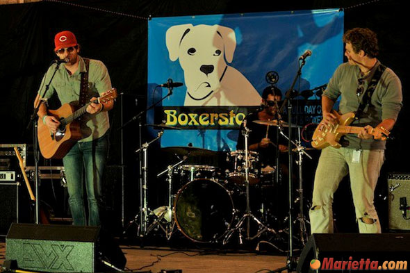
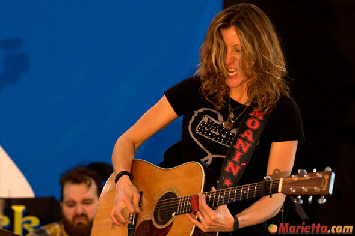

was held at ParkGrounds, a local coffee shop with a dog park attached.
This unique venue provided a good setting for the festival to get its
start. Atlanta's own Caroline Aiken and Trances Arc were the headliners.
The festival was ten hours long and featured twelve regional musical
artists and bands.

Boxerstock 2009
was held at Dogma Dog Care. The benefit concert drew hundreds from
Atlanta and surrounding areas. Local favorites such as Thomas Tillman,
RubberJean, and Tori Bigelow performed.
Boxerstock 2010
In 2010, Boxerstock moved to its current location at the North Georgia
State Fairgrounds at Jim Miller Park in Marietta, Georgia. Headliners
included State of Man; Atlanta's guitar legend, Barry Richman; Rock Star
INXS contestant, Heather Luttrell; American Idol finalist Anna Kaelin,
and other local talent. Over 1200 people attended the event.
Boxerstock 2011
featured seven bands: Course of Virtue, Sean Waterman, The Greg
Burroughs Band, Kick The Robot, JK and the Lost Boys, Jeff Robinson with
the Barry Richman Band and The Michelle Malone Banned. Victoria Stilwell
from Animal Planet's "It's Me or the Dog presented, as well as local
veterinarians from Paces Ferry Veterinary Clinic and trainers from K-9
Coach. The festival drew over 1500 people in 2011.
Boxerstock 2012
featured six bands: Davin McCoy, Erik Smallwood, The Deadfields, JP
Blues Band, 10 Miles of Blue, and Kick the Robot. Speakers included
local veterinarians from Paces Ferry Veterinary Clinic and trainers from
K-9 Coach.

Boxerstock 2013
featured seven bands on the main stage and many more on the side stage.
Featured bands were Caryn Womack, Shameless Dave & The Miracle
Whips, The Daniels Brothers Band, Tom Dixon, Lisa Torres, Them Morris
Boys, and Man Made Band. Shelly Ryan was the Emcee on the main stage and
Kathy Reed on the side stage. Speakers included veterinarians from Paces
Ferry Veterinary Clinic and trainers from K-9 Coach. Notable events from
2013 included obedience and nose work demonstrations, a frisbee demo,
kids and dogs halloween costume contests, and agility demonstrations.
This years event also featured the addition of food trucks.
Boxerstock 2014
was held at Jim Miller Park in Marietta, Georgia on Sunday October 19,
2014 from 12-6pm. Featured bands on the main stage included American
Idol Top 4 Finalist Jessica Meuse, plus Chris Nathan, JP Blues, Tiger
Creek Band, Stolen Hearts, Larry Griffith and Megan Fowler. The side
stage featured many up and coming young artists from the greater Atlanta
area. Presenters included local veterinarians from Paces Ferry
Veterinary Clinic and Amber Burckhalter, Certified Master Trainer and
animal behavior consultant and renowned expert in canine obedience and
behavior modification. Presenting sponsors for 2014 were Paces Ferry
Veterinary Clinic and Unleashed by Petco.
Boxerstock 2015
was held at Jim Miller Park in Marietta, Georgia on Sunday October 11,
2015 from 12-6pm. Featured bands on the main stage included Laughlin,
Justin Dukes, Cody Matlock, Falling Through April, TheSAGAS and
Cumberland Blue. The side stage will feature many up and coming young
artists from the greater Atlanta area. Speakers included local
veterinarians from Paces Ferry Veterinary Clinic and Amber Burckhalter,
Certified Master Trainer and Animal Behavior Consultant and renowned
expert in canine obedience and behavior modification. Presenting
sponsors for 2015 were Paces Ferry Veterinary Clinic and Unleashed by
Petco.
Boxerstock 2016
will again be held at Jim Miller Park in Marietta, Georgia on Sunday
October 23, 2015 from 12-6pm. Featured bands on the main stage include
Apostles of Soul, Kurt Thomas, Cody Matlock, Yacht Rock Schooner and
Chequered Blue. The side stage will featured fifteen up and coming young
artists from the greater Atlanta area, including Liz Kate and Ella
Collier. Presenters include internationally known dog trainer Victoria
Stilwell from Animal Planet's "It's Me or the Dog plus local
veterinarians from Paces Ferry Veterinary Clinic and Amber Burckhalter,
Certified Master Trainer and Animal Behavior Consultant and renowned
expert in canine obedience and behavior modification. Presenting sponsor
for 2016 is Paces Ferry Veterinary Clinic and contributing sponsors
include Petco, North Georgia Veterinary Referral Practice, K-9 Coach/Bed
& Bark, C & C Fence Company, Courier Express and DaLee &
Company, Inc..